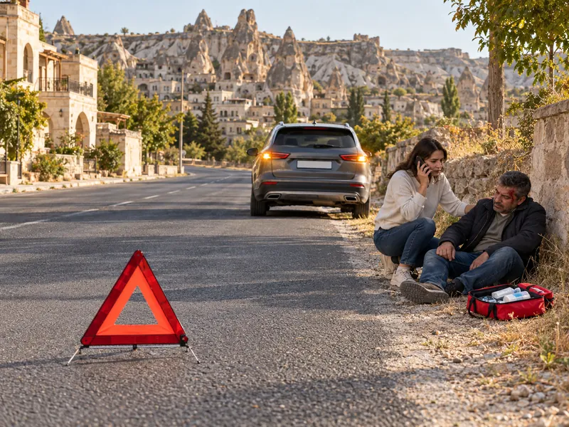

İlk YardımKonu 1 / 1061 çıkmış soru
İlk yardımın temel ilkeleri
İlk yardımın tanımı ve amaçlarını, Koruma–Bildirme–Kurtarma ilkelerini, olay yeri güvenliğini, 112'nin nasıl aranacağını, ilk yardımcının özelliklerini ve araçtaki ilk yardım çantasını kapsar. Sürücü sağlığı ve kaza nedenlerine ilişkin temel bilgiler de konuya dahildir.

1Konu anlatımı
Akılda kalsın
- İlk yardım; tıbbi yardım gelene kadar olay yerinde, mevcut imkânlarla yapılan ilaçsız ve hayat kurtarıcı uygulamalardır.
- İlk yardımın temel uygulamaları Koruma, Bildirme ve Kurtarma'dır; olay yerinde ilk iş, kendinin ve yaralıların güvenliğini sağlamaktır.
- Acil sağlık yardımı için 112 aranır; mesaj kısa, öz ve anlaşılır olmalı, telefonu önce görevli kapatmalıdır.
- 112'ye olay yerinin açık adresi, olayın türü, yaralı sayısı ve durumu ile arayanın adı ve telefonu bildirilir; yaralıların kimliği ya da eğitim durumu bildirilmez.
- İlk yardımcı tanı koymaz, ilaç vermez; yaralı, hayati tehlikelerine karşı önlem alındıktan sonra sevk edilir.
- İlk yardım çantası motosiklet, motorlu bisiklet ve traktör dışındaki motorlu araçlarda zorunludur; içeriği aracın tipine ve taşıyacağı kişi sayısına göre belirlenir.
- Emniyet kemeri kazayı önlemez, kaza anındaki ölüm ve ağır yaralanmaları azaltır.
İlk yardım nedir?
İlk yardım; herhangi bir kaza ya da yaşamı tehlikeye düşüren bir durumda, sağlık görevlilerinin tıbbi yardımı sağlanıncaya kadar hayatın kurtarılması veya durumun kötüye gitmesinin önlenmesi amacıyla olay yerinde, tıbbi araç gereç aranmaksızın, mevcut imkânlarla yapılan ilaçsız uygulamalardır. İlk yardımı, eğitim almış herkes yapabilir; ilk yardımcının sağlık personeli olması gerekmez.
Acil tedavi ise yetişmiş sağlık personelinin tıbbi araç gereç ve ilaç kullanarak yaptığı müdahaledir. Tanı koymak ve ilaçla tedavi etmek ilk yardımcının değil, sağlık personelinin görevidir.
İlk yardımın amaçları
- Hayati tehlikeyi ortadan kaldırmak ve yaşamsal fonksiyonları sürdürmek (temel yaşam desteği sağlamak),
- Yaşamı korumak ve kazazedenin durumunun kötüye gitmesini önlemek,
- İyileşmeyi kolaylaştırmak.
İlk yardım, kaza ya da ani hastalık olduktan sonra başlar; kazaların önlenmesi ilk yardımın değil, trafik güvenliği önlemlerinin konusudur. Kaza yerine çoğu zaman ilk ulaşanlar sürücüler olduğundan, karşılaştığı kazada 112'yi arayıp bildiği ölçüde ilk yardım uygulamak, sorumlu bir sürücüden beklenen olumlu davranıştır.
Temel uygulamalar: Koruma – Bildirme – Kurtarma
| Uygulama | Ne yapılır? |
|---|---|
| Koruma | Olay yeri değerlendirilir, olası tehlikeler belirlenir; ilk yardımcı, kazazede ve çevredekiler için güvenli bir ortam oluşturulur. Amaç, yeni kazaları önleyip kaza sonuçlarının ağırlaşmasını engellemektir. |
| Bildirme | 112 Acil Çağrı Merkezi aranarak olay ve yaralılar hakkında bilgi verilir. |
| Kurtarma | Olay yerinde hızlı ve doğru ilk yardım yapılır; yaralı, hayati tehlikelerine karşı önlem alındıktan sonra uygun şekilde sağlık kuruluşuna ulaştırılır. |
Olay yeri güvenliği
Kaza yerine ulaşan ilk yardımcının öncelikle yapması gereken, kendisinin ve yaralıların güvenliğini sağlamaktır. Bunun için:
- Kendi aracınızı güvenli bir yere park edip dörtlü flaşörü yakın; olay yerini yaklaşan sürücülerin görebileceği şekilde uyarı işaretleriyle (reflektör) belirleyin.
- Kazaya uğrayan aracın kontağı kapatılır, el freni çekilir; araç LPG'li ise tüpün vanası kapatılır. Olay yerinde sigara içilmez.
- Yangın, devrilme, yakıt sızıntısı ve elektrik gibi tehlikeler kontrol edilir.
- Yardımı güçleştiren meraklı kişiler olay yerinden uzaklaştırılır.
Bildirme: 112'nin aranması
Türkiye'de acil sağlık yardımı başta olmak üzere tüm acil durumlar için 112 aranır. Görüşmede sakin olunur; mesaj kısa, öz ve anlaşılır olmalıdır. Bildirilmesi gerekenler:
- Arayan kişinin adı ve telefon numarası,
- Olay yerinin doğru ve açık adresi (yol adı, yön, kilometre, belirgin yer işaretleri),
- Olayın türü ve zamanı (çarpışma, devrilme, yangın vb.),
- Yaralı sayısı ve yaralıların genel durumu (bilinç, solunum, kanama, araçta sıkışma),
- Olay yerindeki tehlikeler ve araçların durumu,
- İlk yardım yapıldıysa nasıl bir uygulama yapıldığı.
Yaralıların kimlik bilgileri ya da eğitim durumu gibi müdahaleye katkısı olmayan bilgiler bildirilmez. Telefon, görevli gerekli bilgileri aldığını söyleyip kapatmadan kapatılmaz.
İlk yardımcının özellikleri ve temel kurallar
- Önce kendi can güvenliğini sağlar; kendini tehlikeye atmaz.
- Sakin, tedbirli, kendine güvenen ve pratik davranır; paniğe kapılmaz.
- İnsan vücudu hakkında temel bilgiye sahiptir; olay yerini ve kazazedeyi hızla değerlendirebilir.
- Mevcut araç gereci kullanarak çözüm üretebilir, iyi iletişim kurar.
- Emin olmadığı uygulamayı yapmaz; ancak "tıbbi yardım gelene kadar hiçbir uygulama yapmamak" da ilk yardımın amacına aykırıdır.
- Yaralıyı gereksiz yere hareket ettirmez, ilaç vermez.
Araçta ilk yardım çantası
İlk yardım çantası, denetimde göstermek için değil, kaza anında tıbbi yardım gelene kadar yaralılara ilk yardım uygulayabilmek için bulundurulur. Motosiklet, motorlu bisiklet ve traktör dışındaki motorlu araçlarda (otomobil, kamyonet, kamyon, minibüs, otobüs vb.) bulundurulması zorunludur. Çantadaki malzemenin miktarı aracın tipine ve taşıyabileceği kişi sayısına göre belirlenir; çok yolcu taşıyan araçta çanta daha kapsamlıdır.
Çantada gazlı bez, sargı bezi, makas, çengelli iğne gibi müdahale malzemeleri bulunur. İlaç bulundurulmaz; kâğıt mendil steril olmadığından zorunlu malzeme sayılmaz.
Sürücü, kazalar ve korunma
- Trafik kazası, karayolunda hareket hâlindeki en az bir aracın karıştığı ve ölüm, yaralanma ya da maddi hasarla sonuçlanan olaydır (ör. virajı alamayan aracın devrilmesi).
- Kazaların en büyük bölümü sürücü hatalarından kaynaklanır. Yorgun ve uykusuz araç kullanmak sürücüye ait bir kaza nedenidir; araç arızası araca, bozuk yol ve yetersiz işaretleme yola bağlı etkenlerdir. Alkol veya madde bağımlılığı, eğitim eksikliği, tedbirsizlik ve tehlikeye atılmaya hazır kişilik yapısı da kazaya yol açan insan kaynaklı faktörlerdir.
- Kazalar tesadüf değildir; önlem alındıkça sayıları azalır.
- Emniyet kemeri kazayı önlemez; çarpma anında savrulmayı ve araçtan fırlamayı engelleyerek ölüm ve ağır yaralanmaları en aza indirir.
- Motosiklette sürücünün koruma başlığı ve koruma gözlüğü, yolcunun koruma başlığı takması zorunludur; motorlu bisiklet sürücüsü de koruma başlığı kullanmak zorundadır.
- Görme yeterliliğini gözlük veya lensle sağlayan sürücüler, araç kullanırken gözlük ya da lenslerini takmak zorundadır. Renk körlüğü ise göz muayenesi esaslarına göre sürücülüğe engel sayılmaz.
2Bu konunun soruları
MEB sınavlarında bu konudan çıkmış 61 soru (5 tanesi en az üç sınavda soruldu). Her soruda doğru cevabı ve açıklamasını hemen görürsünüz.
Hangi sorular?
Sıralama